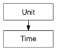

pymel.core.datatypes.Time — PyMEL 1.0.7 documentation
pymel.core.datatypes.Time

-
class Time
-
Unit = Enum( EnumValue('Unit', 0, 'invalid'), EnumValue('Unit', 1, 'hours'), EnumValue('Unit', 2, 'minutes'), EnumValue('Unit', 3, 'seconds'), EnumValue('Unit', 4, 'milliseconds'), EnumValue('Unit', 5, 'games'), EnumValue('Unit', 6, 'film'), EnumValue('Unit', 7, 'PALFrame'), EnumValue('Unit', 8, 'NTSCFrame'), EnumValue('Unit', 9, 'showScan'), EnumValue('Unit', 10, 'PALField'), EnumValue('Unit', 11, 'NTSCField'), EnumValue('Unit', 12, 'k2FPS'), EnumValue('Unit', 13, 'k3FPS'), EnumValue('Unit', 14, 'k4FPS'), EnumValue('Unit', 15, 'k5FPS'), EnumValue('Unit', 16, 'k6FPS'), EnumValue('Unit', 17, 'k8FPS'), EnumValue('Unit', 18, 'k10FPS'), EnumValue('Unit', 19, 'k12FPS'), EnumValue('Unit', 20, 'k16FPS'), EnumValue('Unit', 21, 'k20FPS'), EnumValue('Unit', 22, 'k40FPS'), EnumValue('Unit', 23, 'k75FPS'), EnumValue('Unit', 24, 'k80FPS'), EnumValue('Unit', 25, 'k100FPS'), EnumValue('Unit', 26, 'k120FPS'), EnumValue('Unit', 27, 'k125FPS'), EnumValue('Unit', 28, 'k150FPS'), EnumValue('Unit', 29, 'k200FPS'), EnumValue('Unit', 30, 'k240FPS'), EnumValue('Unit', 31, 'k250FPS'), EnumValue('Unit', 32, 'k300FPS'), EnumValue('Unit', 33, 'k375FPS'), EnumValue('Unit', 34, 'k400FPS'), EnumValue('Unit', 35, 'k500FPS'), EnumValue('Unit', 36, 'k600FPS'), EnumValue('Unit', 37, 'k750FPS'), EnumValue('Unit', 38, 'k1200FPS'), EnumValue('Unit', 39, 'k1500FPS'), EnumValue('Unit', 40, 'k2000FPS'), EnumValue('Unit', 41, 'k3000FPS'), EnumValue('Unit', 42, 'k6000FPS'), EnumValue('Unit', 43, 'userDef'), EnumValue('Unit', 44, 'last'))
-
apicls
alias of MTime